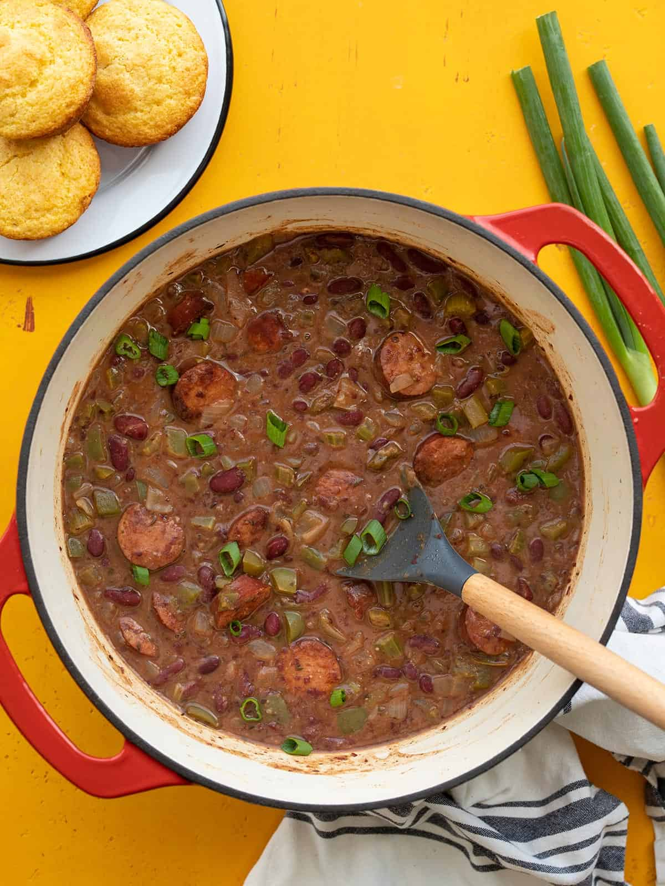

Red Beans and Rice

Description
Mardi Gras is definitely looking a little (okay, a lot) different this year, but that doesn’t mean people aren’t
celebrating! I no longer live in New Orleans, but I still like to celebrate every year with a big pot of red
beans and rice. I usually make a traditional pot of my Louisiana Style Red beans using dry beans, but I get so
many questions about how to do it with canned beans that I decided to make this Quickie Red Beans and Rice
recipe for those who just don’t have time to soak and cook dry beans. It’s not a traditional pot of red beans,
but it’s faster, satisfying, and will make you wish you were watching parades and catching beads!
Ingredients
- 1 Tbsp cooking oil ($0.04)
- 14 oz. Andouille sausage* ($2.99)
- 1 yellow onion ($0.32)
- 1 bell pepper ($0.69)
- 3 ribs celery ($0.25)
- 4 cloves garlic ($0.32)
- 2 tsp smoked paprika ($0.20)
- 1 tsp dried oregano ($0.10)/li>
- 1 tsp dried thyme ($0.10)
- 1/2 tsp garlic powder ($0.05)
- 1/2 tsp onion powder ($0.05)
- 1/4 tsp cayenne pepper ($0.03)
- 1/4 tsp freshly cracked black pepper ($0.02)
- 3 15oz. cans kidney beans ($1.50)
- 1 cup chicken broth ($0.13)
- 3 green onions, sliced ($0.30)
- 1.5 cups long grain white rice ($0.93)
Steps
- Slice the sausage into rounds or half-rounds. Add the sausage and cooking oil to a large pot and cook over
medium heat, stirring occasionally, until the sausage is browned.
- While the sausage is cooking, dice the onion, bell pepper, and celery. Mince the garlic.
- Add the onion, bell pepper, celery, and garlic to the pot with the sausage and continue to cook until the
onions
are soft and translucent.
- Add the smoked paprika, oregano, thyme, garlic powder, onion powder, cayenne, and black pepper to the pot
and
continue to cook and stir for a minute more.
- Drain two of the cans of beans. Add the third can to a blender, with the liquid from the can, and purée
until
smooth. The puréed beans will help thicken the pot and make everything extra creamy. Add the drained beans,
puréed beans, and chicken broth to the pot, then stir to combine.
- Place a lid on the pot and allow the beans to come up to a boil. Once boiling, turn the heat down to
medium-low,
and let the pot continue to simmer for about 30 minutes, stirring occasionally.
- While the red beans are simmering, begin cooking your rice. Add the uncooked rice to a pot with 3 cups
water.
- Place a lid on the pot and turn the heat up to high. Once the pot reaches a full boil, turn the heat
down to low
and let the rice simmer for 15 minutes. After 15 minutes, turn the heat off and let the rice sit,
undisturbed,
lid in place, for an extra 5 minutes. Fluff with a fork just before serving.
- After the beans have simmered for 30 minutes, give them a taste and add salt if needed (between the
sausage and
canned beans I didn't find I needed to add any, but salt content can vary so be sure to give it a taste).
Serve
the beans in a bowl, topped with a scoop of rice, and a few sliced green onions.
Home